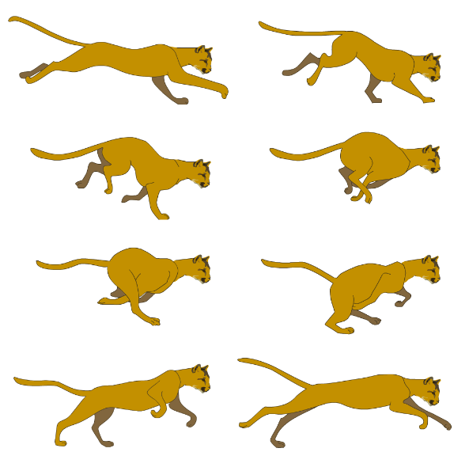

TPO/Proyecto
¿Que vamos a saber hacer?
- Usar archivos.
- Crear estructuras de datos en memoria.
- Manejos de distintos procesos simultaneos comunicandose dentro de la misma PC o en red.
- Librerias complejas (todas cross-platform):
- OpenCV
- Allegro (o SDL)
- Ncurses
- ¿Otra que les parezca útil para su proyecto?
- Threads/Sockets
- Librerías también, pero últiles para trabajar en redes y atendiendo varios procesos al mismo tiempo.
OpenCV
Es una librería de procesamiento de imagenes creada por intel y luego liberada al dominio público.
Soporta:
- Manejo de 2D y 3D
- Mostrar/procesar imagenes
- Dibujar circulos, elipses, lineas, rectangulos, etc...
- Usar el mouse
- Detección de imagenes (caras, gestos, etc...)
- Manejo de webcams
- Etc...
Allegro
Allegro es una librería para el desarrollo de juegos.
La librería soporta:
- Manejo básico de gráficos 2D y animaciones.
- Manejo de imagenes y uso de sprites.
- Texto, audio y MIDI.
- Entrada y temporizadores.
- Manejo de archivos.
- El soporte 3D es limitado a software (lento).
Sprites
SDL
Simple DirectMedia Layer
(not Standard Template Library - STL c++)
- Es una librería diseñada para el desarrollo de juegos.
- Proveé acceso a bajo nivel (mas rápido) para:
- Audio
- teclado, mouse y joystick
- Gráficos usando OpenGL y Direct3D
- Ejemplos de uso: Tux Racer y MAME.
SDL - Simple DirectMedia Layer
Mas información:
- http://www.libsdl.org/
- Game Programming with the Simple DirectMedia Layer (May 31, 2003): http://www.linuxjournal.com/article/6410
- http://gamedevgeek.com/tutorials/getting-started-with-sdl/
- http://gamedevgeek.com/tutorials/moving-sprites-with-sdl/
Ncurses

Ncurses
ncurses es una librería de programación que permite al programador trabajar con ventanas, botones, etc... En terminales modo texto.
- http://en.wikipedia.org/wiki/Ncurses
- http://www.writeka.com/ed/ncurses_library.html
- http://www.tldp.org/HOWTO/NCURSES-Programming-HOWTO/
Sockets/Threads
TPO/Proyecto
- Proyectos años anteriores...
- Lista de proyectos posibles...